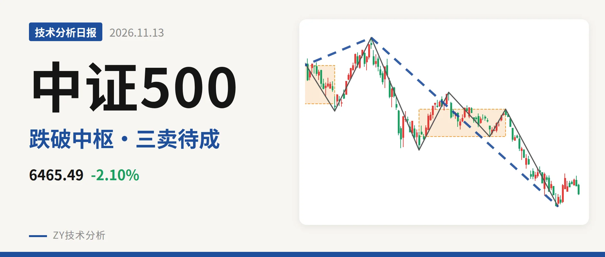
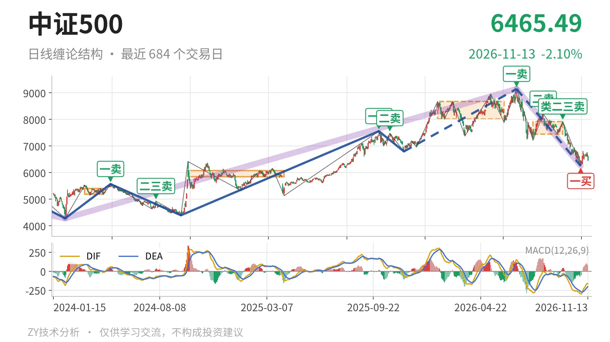
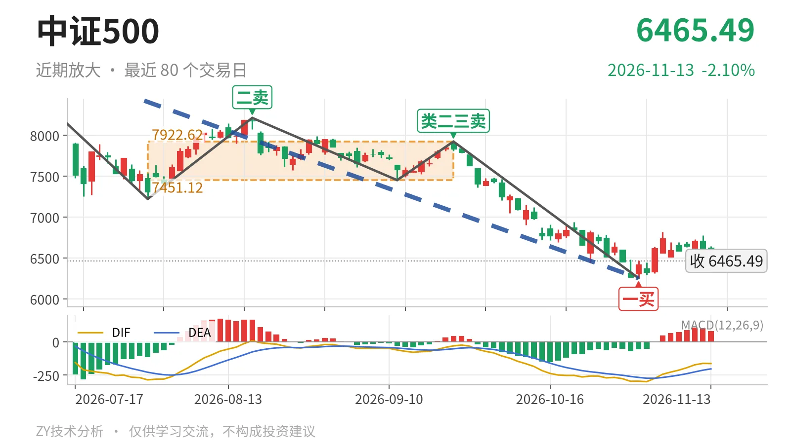

中证500｜反抽未回7451点，日线三卖结构待成

最近日线中枢 7451.12—7922.62点，收盘位于中枢之下
一句话：中证500处下跌段，反抽未回7451点，结构偏弱。
📉 走势结构：下跌段未结束，反抽还没成笔
中证500仍处在2026年7月1日9147.56点至11月2日6253.79点的日线下跌线段中，段内5笔，下跌结构没有结束。更大级别看，2024年2月5日4281.24点至2026年7月1日9147.56点的上涨走势还在延续，但当前日线线段已进入深幅回落，高点至低点跌约31.6%。11月3日至11月13日只有9根K线，最高6819.12点、最低6292.31点，仍未走出日线反向笔，因此当前只是11月2日一买后的停顿，未改变下跌段结构。

📍 中枢与位置：中枢下移，价格在下沿下方
最新收盘6465.49点位于最近日线笔中枢下方。该中枢为2026年7月30日至9月22日的7451.12—7922.62点，中轴7686.87点；其前一个日线笔中枢是1月26日至6月8日的8014.66—8671.35点，中轴8343.00点。中轴由8343点下移到7687点，中枢下移。当前价格低于最近中枢下沿7451.12点约13.2%，11月3日以来的反弹最高6819.12点也没回进7451点，向下离开中枢后没有有效回拉。
🔴 买卖点：卖点一个比一个低，一买只算局部
日线笔级别上，2026年7月1日一卖9147.56点、8月18日二卖8211.31点、9月22日类二三卖7922.62点，反弹高点一个比一个低。11月2日出现日线笔一买6253.79点，所在下跌笔已经结束，但之后反抽尚未形成日线上涨笔，因此这个一买目前只是局部低点，还看不到笔级别反转。线段级别上，2025年11月24日三买6797.50点已被本轮低点6253.79点跌破，该三买只对应更小级别，不再构成当前线段的支撑结构。

⚖️ 背驰：面积缩小，DIF新低，非标准背驰
比较仍以2026年9月22日至11月2日下跌笔与7月1日至7月30日下跌笔为准，因为11月2日低点未被后续破坏。价格低点从7221.95点下移到6253.79点，绿柱面积由2687缩至1782，但DIF低点由-285.2继续下探到-295.6。这是价格新低、面积萎缩而DIF仍创新低的组合，不算标准的新低不新弱，只是一买位置的局部力度衰减。这个力度组合解释了反抽偏弱，也说明这里不构成日线笔级别的动能反转。
🔎 关键位置：7451点与6254点定强弱
当前结构偏弱。上方关键位看7451点附近，这是7月30日至9月22日中枢下沿；反抽若不能回到7451点上方，日线三卖结构就仍会成立。下方看6254点附近，即11月2日一买低点6253.79点，同时2022年4月27日至2023年8月4日的线段中枢上沿6263.16点也在这一带；若重新跌破6254点，一买只对应更小级别，价格会回到更大级别中枢内部，9月22日以来的下跌继续。若能重新站上7451点，本轮回落更可能转为中枢扩展。在回到7451点之前，只能按偏弱结构看待。
⚠️ 本文为基于公开行情数据的缠论技术结构记录，由程序自动计算并生成，仅供学习交流，不构成任何投资建议。市场有风险，投资需谨慎。